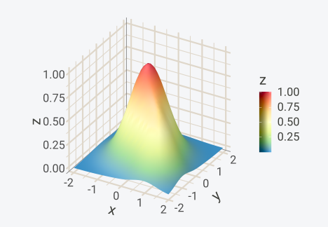
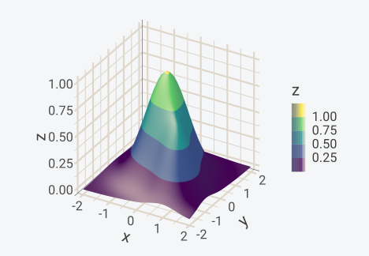
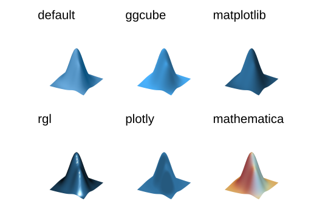
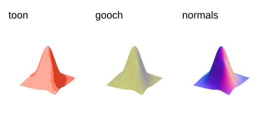
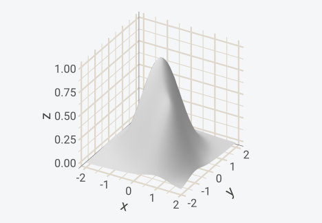
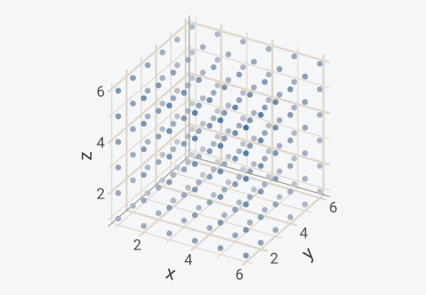

A lit surface shows its orientation through brightness. When fill represents data, its legend needs to account for the colour changes caused by lighting. This article lights a height surface and uses shaded colour guides to read it. Installation is covered in Get started; the multi-panel examples use patchwork to arrange the views.
library(ggplot3d)
library(ggplot2)
d <- expand.grid(x = seq(-2, 2, length.out = 36), y = seq(-2, 2, length.out = 36))
d$z <- with(d, exp(-(x^2 + y^2)) + 0.5 * exp(-((x - 1)^2 + (y + 1)^2) * 2))
hill <- ggplot(d, aes(x, y, z = z, fill = z)) +
geom_surface_3d(shading = "smooth", colour = NA)Colour that survives shading
By default the light moves only the OKLab lightness of the fill and
keeps its hue: faces turned toward the light get lighter, faces turned
away get darker, and a face at the neutral angle to the
light keeps its colour exactly, so the colour stays recognisable against
its key.
hill + scale_fill_distiller(palette = "Spectral",
guide = guide_colourbar_3d(along = NULL, shading_range = TRUE)) +
coord_3d()
The colourbar now shows each value from shadow (left) to full light (right), sampled from the same shading kernel as the faces. A palette that changes lightness with value, such as viridis, loses the most under shading, since shading changes lightness too; a diverging or isoluminant palette leaves lightness free for the shape.
light_3d(mode = "multiply") scales the fill by the light
instead, as matplotlib and rgl do. It can only darken, so a face at a
grazing angle is a darker version of its colour and a dark yellow no
longer looks like the yellow in the legend; and since the default light
comes from near the viewer, the faces that face the camera all get
nearly the same light and blend together.
"tone" moves the colour toward a shadow and a highlight
colour instead, and "overlay" and "soft" are
the blend modes of matplotlib’s LightSource.
hill + scale_fill_viridis_b(guide = guide_coloursteps_3d()) +
coord_3d(light = light_3d(light_directional(), mode = "tone",
shadow_colour = "#22305a", highlight_colour = "#fff3d0"))
The lighting of other packages
Each 3D package lights a surface in its own way, and a figure redrawn
from one of them can keep its look with
light_3d(preset = ). ggcube moves the HSV value of the fill
toward black or white; matplotlib only darkens, by up to 70 percent; rgl
puts a white headlight highlight on faces lit at their corners; plotly
lights from above the viewer with a strong ambient term; and Mathematica
tints the surface with four coloured lights, which suits light fills.
Any argument given with a preset replaces the preset’s value.
presets <- c("default", "ggcube", "matplotlib", "rgl", "plotly", "mathematica")
panels <- lapply(presets, function(preset) {
ggplot(d, aes(x, y, z = z)) +
geom_surface_3d(fill = if (preset == "mathematica") "grey85" else "#2E6F9E",
shading = "smooth", colour = NA) +
coord_3d(light = light_3d(preset = preset), panes = character(),
axes = character(), box = "none") +
ggtitle(preset)
})
patchwork::wrap_plots(panels, ncol = 3)
A highlight mixes white into the fill to indicate surface
orientation. material_3d("satin") keeps it faint, and
light_3d(material = ) gives every shaded layer without its
own material that one.
Illustrative styles
material_3d(style = ) changes how a face responds to the
light. Toon shading quantises the response into bands, Gooch shading
(Gooch et al. 1998) turns brightness into a cool-to-warm hue shift that
keeps dark regions readable, and normal colouring encodes the
orientation of each face as a colour.
plain <- ggplot(d, aes(x, y, z = z)) +
coord_3d(panes = character(), axes = character(), box = "none")
toon <- plain + geom_surface_3d(fill = "tomato", colour = NA,
material = material_3d(style = "toon", bands = 4)) + ggtitle("toon")
gooch <- plain + geom_surface_3d(fill = "grey60", colour = NA, shading = "smooth",
material = material_3d(style = "gooch")) + ggtitle("gooch")
normals <- plain + geom_surface_3d(colour = NA, shading = "smooth",
material = material_3d(style = "normals")) + ggtitle("normals")
patchwork::wrap_plots(toon, gooch, normals, nrow = 1)
Line drawings
hatch_3d() draws the tone as hatching. The strokes are
cut from the surface by parallel planes, so they follow it in depth and
are hidden by nearer parts like any other line; darker faces keep more
of them. With a white fill, feature lines from outline_3d()
and the plotter backend, which draws strokes only, the figure is a line
drawing that an SVG device writes for a pen plotter.
ggplot(d, aes(x, y, z = z)) +
geom_surface_3d(fill = "white", colour = NA, hatch = hatch_3d(angle = 0, spacing = 0.02),
outline = outline_3d(linewidth = 0.4)) +
coord_3d(backend = backend_3d("plotter"), panes = character(), box = "none")
Light sources, shadows and depth
light_3d() combines one or more lights.
light_directional() shines from a direction,
light_point() from a position in the data with intensity
falling off with distance, light_head() from the camera,
and light_hemisphere() blends a sky colour from above with
a ground colour from below. A point light just above one corner
brightens the faces near it.
plain <- ggplot(d, aes(x, y, z = z)) +
geom_surface_3d(fill = "grey80", colour = NA, shading = "smooth")
plain + coord_3d(light = light_3d(light_point(c(-2, -2, 1.5), falloff = 1),
light_hemisphere(sky = "white", ground = "grey40")))
shadow_3d() casts the shadow of the scene onto the floor
of the box from a directional light. Raising the lower z limit leaves
room for the shadow below the surface.
plain + coord_3d(zlim = c(-0.5, 1.2),
shadow = shadow_3d(light = light_3d(light_directional(c(1, 1, 3), space = "data"))))
depth_cue_3d() makes depth readable without lighting:
fog fades distant marks toward the background,
linewidth = TRUE thins distant lines, and eye-dome lighting
(edl) darkens the edges where depth jumps, which helps
point clouds.
lattice <- expand.grid(x = 1:6, y = 1:6, z = 1:6)
ggplot(lattice, aes(x, y, z = z)) + geom_point_3d(size = 2, colour = "#2E6F9E") +
coord_3d(depth_cue = depth_cue_3d(fog = "grey90", amount = 0.8))
Legends that show the shading
A colour key shows the fill before lighting, while the plot shows it
after. guide_colourbar_3d(),
guide_coloursteps_3d(), guide_legend_3d() and
guide_bins_3d() add the range of shades that the light
produces for each colour, so the darkest face in the plot can be matched
to its key.
columns <- expand.grid(x = 1:4, y = 1:2)
columns$z <- columns$x + columns$y
ggplot(columns, aes(x, y, z = z, fill = factor(x))) + geom_col_3d() +
scale_fill_manual(values = c("#2E6F9E", "#B5342B", "#3F7A3D", "#9E5E0F"),
name = "x") +
guides(fill = guide_legend_3d(shading_range = TRUE)) + coord_3d()